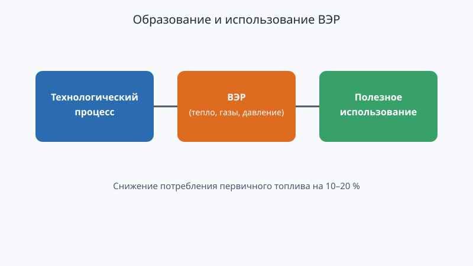
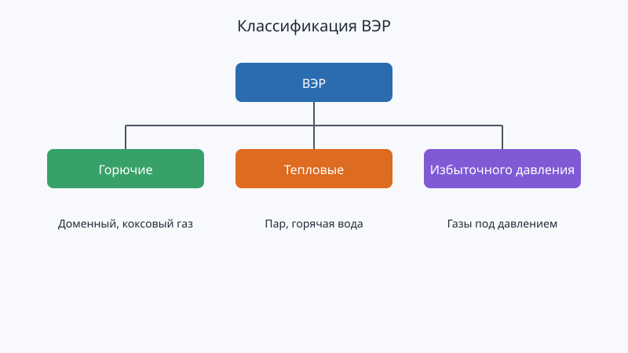
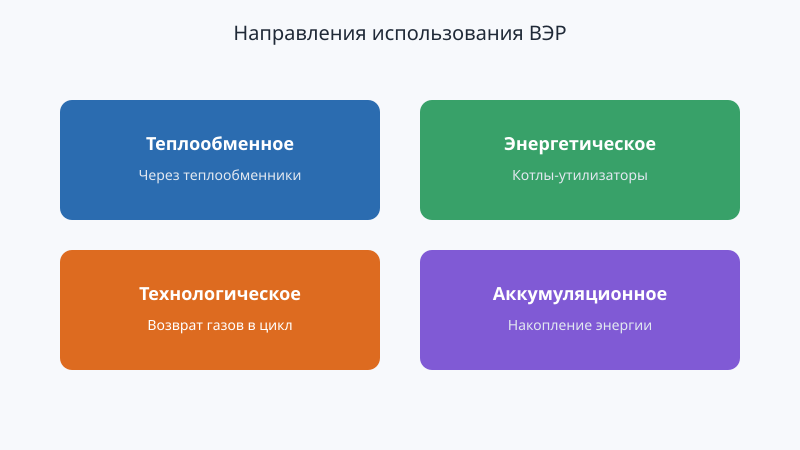

Глава 8. Вторичные энергетические ресурсы
8.1 Понятие вторичных энергетических ресурсов
Вторичные энергетические ресурсы (ВЭР) — это энергия, получаемая как побочный продукт технологических процессов и используемая для выработки тепла, электроэнергии или пара. ВЭР относятся к возобновляемым источникам энергии (ВИЭ), поскольку их использование не требует дополнительной добычи первичных ресурсов.
ВЭР образуются в промышленности, энергетике, на транспорте и в коммунальном хозяйстве. Их использование позволяет снизить потребление первичного топлива и уменьшить нагрузку на окружающую среду.
Ключевой инструмент использования ВЭР — рекуперация — возврат части энергии или вещества в технологический процесс для повторного использования. Для передачи тепла применяются теплообменники.

Потенциал ВЭР в промышленности значителен: по разным оценкам, он составляет 10–20 % от общего потребления топлива.
8.2 Виды и источники ВЭР
ВЭР классифицируются по агрегатному состоянию и источнику образования. Основные виды:
- Горючие ВЭР — побочные горючие газы (доменный, коксовый), отходы производства.
- Тепловые ВЭР — горячие газы, пар, горячая вода, образующиеся в технологических процессах.
- ВЭР избыточного давления — энергия газов и жидкостей, покидающих установки под давлением.
Основные источники ВЭР: металлургия, нефтехимия, цементное производство, компрессорные и насосные станции, системы вентиляции и кондиционирования.

Наибольший объём ВЭР сосредоточен в металлургии и нефтехимии, где технологические процессы сопровождаются выделением больших количеств тепла и горючих газов.
8.3 Использование и рекуперация ВЭР
Использование ВЭР реализуется по нескольким направлениям.
- Теплообменное — передача тепла от горячих потоков к холодным через теплообменники.
- Энергетическое — выработка электроэнергии или пара из ВЭР (например, котлы-утилизаторы).
- Технологическое — возврат горючих газов и отходов в производственный цикл.
- Аккумуляционное — накопление энергии ВЭР для последующего использования.
Наибольший эффект достигается при комплексном использовании ВЭР — например, при сочетании рекуперации тепла с выработкой электроэнергии и возвратом горючих газов в производство.

Проверка знаний
-
Что такое вторичные энергетические ресурсы (ВЭР)?
Энергия, получаемая как побочный продукт технологических процессов и используемая для выработки тепла, электроэнергии или пара.
-
Что такое рекуперация?
Возврат части энергии или вещества в технологический процесс для повторного использования.
-
Для чего применяются теплообменники?
Для передачи тепла от одного теплоносителя к другому без их смешения — основной инструмент рекуперации тепла.
-
Назовите основные виды ВЭР.
Горючие ВЭР, тепловые ВЭР и ВЭР избыточного давления.
-
В каких отраслях сосредоточен наибольший объём ВЭР?
В металлургии, нефтехимии, цементном производстве, а также на компрессорных и насосных станциях.
-
Перечислите направления использования ВЭР.
Теплообменное, энергетическое, технологическое и аккумуляционное.